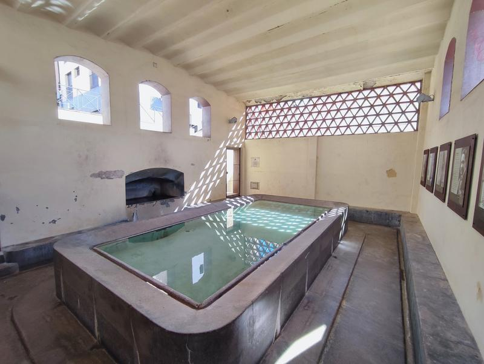
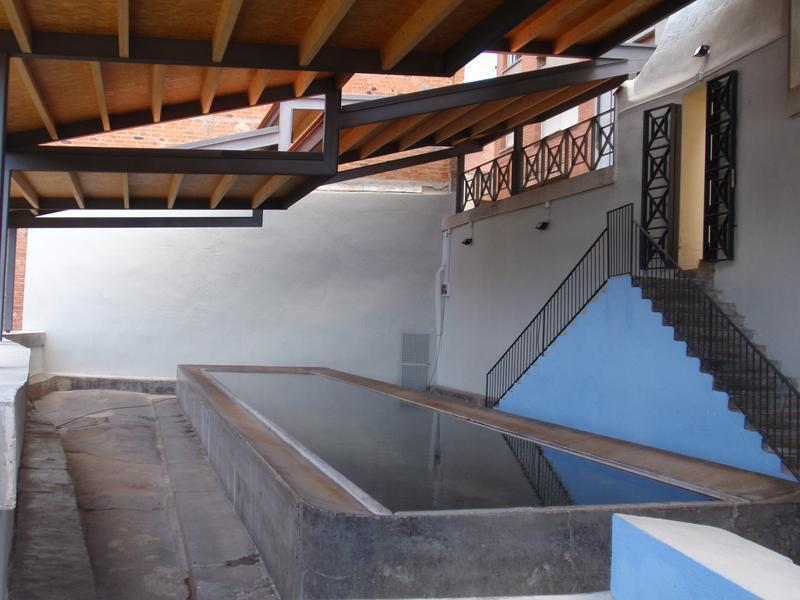
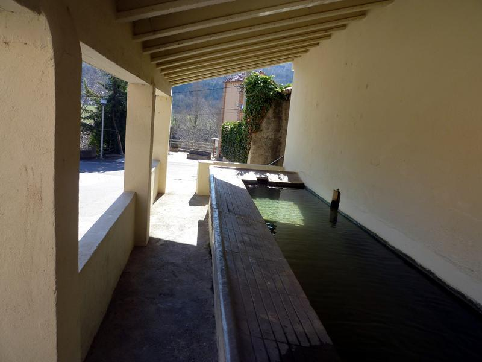

Safareigs
-
 La Canaleta
El Safareig de la Canaleta és una obra inclosa a l'Inventari del Patrimoni Arquitectònic de Catalunya. Fou restaurat el 2005 per un taller escola.
-
 La Portalera
El Safareig públic la Portalera és una obra protegida com a bé cultural d'interès local
-
 Santa Esperança
El Safareig públic Santa Esperança és una obra protegida com a bé cultural d'interès local. Se situa just al costat del torrent de Santa Esperança i és degut a això que adopta aquest nom.